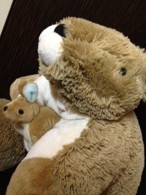

<<2012年11月 | トップページ | 2013年1月>>
2012年12月
【大事にしているもの】島田太一
小さい時から大事にしてるものは、ランドセルです。
ランドセルの色は自分で決めました。
ランドセルを買うために
わざわざ二時間くらいかけて行ったので大変でした。
やはり、自分で選んだランドセルなので、
６年間使っていて、全く不満がないです（笑）
でも、そのランドセルを今年で使えなくなるのは悲しいです(> <)
投稿者:島田太一 | 投稿時間:18時00分 | カテゴリ：We are 大天才テレビジョン | 固定リンク


 " title="ソーシャルブックマークについて">
" title="ソーシャルブックマークについて">
※NHKサイトを離れます。
【大事にしているもの】山田陶子
TOKO（トコ）です。
２歳頃から、一緒です。
外での遊びが大好きで、お兄ちゃんの仲間と探検や、
泥遊び、木登り、水遊び、葉っぱや土でのおままごと・・・
な〜んか、ばっかりしていて、
女の子が大好きな、夢の国のキャラクターや、ぬいぐるみ、
赤ちゃん人形、全然興味ありませんでした。
ある日、ママと一緒に、雑貨屋さんに行ったら、
陳列棚の一番下の、床の奥〜の方に、「SALE」って、
紙が貼ってあるカゴが、あったんです。
今でも、覚えてるんですけど、
いろんなものが、その中に入っていて、
なんか、気になってしゃがんで見てみたら、TOKOも、カゴに刺さってたんです。
思わず、手に取って、
「ママ、この子欲しい」って、言って買ってもらったんですよ。
それから、ずっと一緒に寝てます。
TOKOが来てから、ぬいぐるみも好きになり、
仲間も、増えましたが、この子は特別です。
ついでに、着ぐるみが、怖くてしかたないのですが、
それは、TOKOが来てからも、無理です・・・。
初めて夢の国に行ったとき、
女ねずみさんが、ホッペにチュー！してきたから、顔ぶっ叩いて、逃げました。
ごめんなさい・・・。
投稿者:山田陶子 | 投稿時間:18時00分 | カテゴリ：We are 大天才テレビジョン | 固定リンク
" title="ソーシャルブックマークについて">
※NHKサイトを離れます。
【大事にしているもの】黒澤美澪奈
こんにちは＼(^o^)／
みれなです！
これから紹介するのは
私の夜の仲間たちです(^-^)
いつも私のそばにいてくれる
とても大切な存在です
この中で、特に私が小さい頃から大事にしているのは…
抱っこしているネコちゃんです〜
私が１歳の頃、
お母さんが病院に入院していた時、
私を預かってくれた親せきのお家で出会いました。
私は昼間は元気に遊んでいても
夜はビービー泣いてばかりいて(´Д｀)
だから、寂しくないようにって
ネコちゃんをプレゼントしてくれたそうです
それから、ずっと一緒にいるので、とっても付き合いが長いんです
何回も洗ったので少しよれよれですが(笑)
今も寝る時は、一緒です！
でも、もう夜泣きはしてないですよ〜
投稿者:黒澤美澪奈 | 投稿時間:18時00分 | カテゴリ：We are 大天才テレビジョン | 固定リンク
" title="ソーシャルブックマークについて">
※NHKサイトを離れます。
【大事にしているもの】延命杏咲実
私が小さいころから大事にしている物は、
かわいいお人形さんです。
大きいお人形さんは、２才ごろに買ってもらいました！
おじいちゃんとおばあちゃんに買ってもらって、
すごくうれしかったです。
小さいお人形さんは、５才ごろに買ってもらいました。
これも、おじいちゃんとおばあちゃんに買ってもらいました！
実は、今でもいっしょにねています！
なんか、すごくかわいらしくて、ねむりやすいです。
着せかえも持ってます！
でも、その服が小さい！（笑） ←そりゃあ、小さいですよね（笑）
そこもかわいいです。
もう、なにもかもがかわいい！！
投稿者:延命杏咲実 | 投稿時間:18時00分 | カテゴリ：We are 大天才テレビジョン | 固定リンク
" title="ソーシャルブックマークについて">
※NHKサイトを離れます。
【大事にしているもの】寺田朱里
やっぽ〜！！
私の大事なものは髪の毛〜♪
うそうそ〜冗談〜！ 大事だけどね！
本当は〜
お姉ちゃんとおそろいのこのぬいぐるみが大事なのぉ〜！
馬！だよ〜 ひひ〜ん
４、５年前から持っているの〜！！！
昔はこれくらいしかおそろいのものが無かったから
なんだかすごく嬉しかったぁ！
でも、いっぱいケンカしたよ〜。
今はおかげさまで仲良いけどねんっ！
うっふっふふふ〜♪
投稿者:寺田朱里 | 投稿時間:18時00分 | カテゴリ：We are 大天才テレビジョン | 固定リンク
" title="ソーシャルブックマークについて">
※NHKサイトを離れます。
【大事にしているもの】長谷川ニイナ
Hello！！
皆さんは「小さい頃から大事にしているもの」ってありますか？
私の小さい頃から世界一大事にしているモノは、
「毛布」です！！（え！！）
そうなんです！
私の毛布は、黄色くて、くまさんがかいてある毛布なんですが・・・。
なんと！！
私が生まれる３ヶ月くらい前に買った毛布なんですよ(≧∀≦)
１２年も！
いつも見てるから慣れてるけど、
よく考えたら私より先輩だぁ！すごいです☆
そして、この毛布が愛され続けたわけ！
それは・・・。
「臨機応変に対応してくれる」からです！！
信じられないと思うんですけど、
夏はヒンヤリしてて、冬はポカポカしているんです！
自慢できる最高の相棒だぁ！！
でも、もうビリビリに・・・。
今度修理します。
ではバイバーイ！
投稿者:長谷川ニイナ | 投稿時間:18時00分 | カテゴリ：We are 大天才テレビジョン | 固定リンク
" title="ソーシャルブックマークについて">
※NHKサイトを離れます。
【大事にしているもの】鎮西寿々歌
うちの大切なもの。
弟からバレンタインのお返しにもらった
「ハートのベル」
です?♪♪
鈴がなるんです♪
寿々歌だけにねーっ☆
はい。すみません。笑
常にポーチに入れて持ち歩いています(^ ^)
疲れた時や，悲しい時にこれを鳴らして音を聴くと
落ち着くんです…。
もーすぐXmas…
ロマンチック〜♪
ジングルベルジングルベル
寿々が鳴る〜♪
投稿者:鎮西寿々歌 | 投稿時間:18時00分 | カテゴリ：We are 大天才テレビジョン | 固定リンク
" title="ソーシャルブックマークについて">
※NHKサイトを離れます。
きょうはクリスマスイブですので
「大！天才てれびくん」をご覧のみなさま、クリスマスイブをいかがお過ごしですか。
きょうは良い子にしていた視聴者のみなさんに番組からクリスマスプレゼントを贈ります。
じゃーん！
そうです！朱里画伯がクリスマスをモチーフに画を描いてくれたんです。
クリックすると原寸大になりますので、額に入れて飾るもよし、パソコンの壁紙として使うもよし。
みなさんの工夫でこのアクの強い画を活用してみてください。
ちなみにモチーフに難解さがある朱里画伯の画ですが、解説を頂きました。
「この絵は寿々歌がストレス発散のためにクリスマスツリーでストレッチをしている絵！それを初日の出のように出川さんが見守っているの！」
なんだかわかったようなわからないような感じですが、みなさんステキなクリスマスをお過ごしください。
投稿者:大天才テレビジョン社員１号 | 投稿時間:12時00分 | カテゴリ：お知らせ！ | 固定リンク
" title="ソーシャルブックマークについて">
※NHKサイトを離れます。
【大事にしているもの】金子隼也
小さい頃から大切にしている物は
仮面ライダー1号のベルトです！
小さい頃から仮面ライダーが大好きで、
人形などを大切にしています。
変身ベルトをつけるとポーズをよくとっていました。
変身ベルトや人形は、おばあちゃん家の宝箱にしまってあるので
僕の変身ポーズで(笑)
投稿者:金子隼也 | 投稿時間:18時00分 | カテゴリ：We are 大天才テレビジョン | 固定リンク
" title="ソーシャルブックマークについて">
※NHKサイトを離れます。
【大事にしているもの】竹原司
こんにちは！司です。
僕が小さい頃から大切にしていて、いつも遊んでいた物は、
動物の人形達です。
その中でも、大人の馬が特にお気に入りで、
毎日どこに行く時も持ち歩いていました。
だから濃い茶色だったのに、色がはげて・・・
こんない〜い！感じの色になりました。
ずーっと遊んでいなかったけど・・・。

久しぶりに見たら、また遊びたくなって１人で並べて遊んじゃいました。
小さい頃を思い出した司でした。
投稿者:竹原司 | 投稿時間:18時00分 | カテゴリ：We are 大天才テレビジョン | 固定リンク
" title="ソーシャルブックマークについて">
※NHKサイトを離れます。
【大事にしているもの】岡田結実
うーんと３年ぐらいから、あひるのぬいぐるみをもっていて、
ずっと大切にしてたら
ある日天てれにごうかくして夏イベなどにもっていったら
りょうくんがすごくかわいがってくれて
りょうくんが１人じゃあかわいそうだから
ぼくの人形もあげるって言ってくれてもらいました！
ありがとうございます！！
今もふたりはなかよしです！！
投稿者:岡田結実 | 投稿時間:18時00分 | カテゴリ：We are 大天才テレビジョン | 固定リンク
" title="ソーシャルブックマークについて">
※NHKサイトを離れます。
【大事にしているもの】浅賀玲音
れおです！
小さい頃から
大事にしている物は
このぬいぐるみなのですが
なんとこれ
お母さんの手作りなんです！
生まれた時からずっといて
小さい時はこの
ぬいぐるみが無いと
眠れなかったぐらい
手放せなかったですね
今もお母さんの部屋で
大切に保管されてます！
なんだか懐かしいですなぁ
ふぉっふぉ
さようならー！
投稿者:浅賀玲音 | 投稿時間:18時00分 | カテゴリ：We are 大天才テレビジョン | 固定リンク
" title="ソーシャルブックマークについて">
※NHKサイトを離れます。
【大事にしているもの】ソーズビー航洋
ぼくは、ぬいぐるみを昔から大事にしています♪
現在ベッドの上には（自分の）なんと！！６５体います！！
これからお気に入りの５匹をしょうかいします☆
これはぼくが赤ちゃんのときアメリカにすんでいたころの犬たちです。
名前はMOMU（マームー）。また会いたいなぁ（泣）
耳ひっぱったり、のっかったりしても赤ちゃんってわかってたから
噛まないでいてくれたんだよー（泣）

これはPillow Pet という机で、たたんで立たせたり、まくらにさせられるんです！！
アメリカではめっつぁ人気です☆
この子は、足にスピーカーがついていて、音楽プレーヤーとかをつなげると、
足から音楽が出るんです！！ WOW！！
この子はアメリカのひーおばあちゃんにもらったクマです。
ふくのうでには、２０００と書いてあります。
ぼくの生まれた年です☆グランマありがとう！！
この４匹はぜんぶアメリカから来日してきた子供たちです！！
アメリカやっぱりすごい！！
それでは
Koyoでした〜♪
投稿者:ソーズビー航洋 | 投稿時間:18時00分 | カテゴリ：We are 大天才テレビジョン | 固定リンク
" title="ソーシャルブックマークについて">
※NHKサイトを離れます。
【大事にしているもの】長江崚行
小さい頃から大切にしてるもの……
何でしょうねぇ…
パッと思いつかないものです。
ですが、とても印象深くて大切にしてるものって言えば……
天体望遠鏡かな！
小さい頃…って言うか、小学生の頃に買ってもらったんだけど。(笑)
星が好きで好きで、星が見たい！って思って
誕生日プレゼントで買ってもらった天体望遠鏡。
レンズを通してみた月は、まだ思い出として残ってます！
今は全然見れてないけど、暇があったら見てみよう…
崚行でしたー。
投稿者:長江崚行 | 投稿時間:18時00分 | カテゴリ：We are 大天才テレビジョン | 固定リンク
" title="ソーシャルブックマークについて">
※NHKサイトを離れます。
【冬を感じたとき】鎮西寿々歌
うちが冬を感じた時…
部活で走ってた時に手がかじかみ、鼻が赤くなった時♪
半袖でさむっ！と思った時♪
鍋が食べたいと思った時♪
です(^ ^)
多いですねーっ笑
うち最近気付いたことがあって…
寒い日に半袖でいることが好きなんです☆
寒いの大好きーーっ
みんなは冬好きー？
あっ！そうだ！
冬になると
コーヒーショップでほうじ茶ラテを頼みます(^ ^)
この前…メッセージが書いてあって
心も温まりました。♪
投稿者:鎮西寿々歌 | 投稿時間:18時00分 | カテゴリ：We are 大天才テレビジョン | 固定リンク
" title="ソーシャルブックマークについて">
※NHKサイトを離れます。
【冬を感じたとき】長谷川ニイナ
こんにちは〜♪
もう冬ですね。
私にとっては、まだ９月くらいの気分なんですけど・・・（笑）
私が冬だなぁと感じる時は、ころも替えの時です！！
半そでの服から長そでへ。
そのうちカイロなどはっていくようになると
「あぁ、冬なんだなぁ」って感じてきます！
でもまだちょっと早い気もして・・・。
そうなると冬を感じる時は、
「クリスマス」の時もあります。（遅っ！！！）
あ〜、早くクリスマス来ないかなぁ〜。
↑ あ、ちなみにこの写真は、去年のクリスマスの時の写真でーす！！
ウチでは「正月」より「クリスマス」の方がビックイベントなので、
いっぱいプレゼントをもらうんです〜。
ではでは！
投稿者:長谷川ニイナ | 投稿時間:18時00分 | カテゴリ：We are 大天才テレビジョン | 固定リンク
" title="ソーシャルブックマークについて">
※NHKサイトを離れます。
【冬を感じたとき】金子隼也
僕が冬を感じる時は、
朝寒くて布団から出られなくなった時です。
冬の朝はすごく寒いので
暖かい布団にずっといたい気持ちです！
ふかふかの毛布、愛しすぎます(笑)
投稿者:金子隼也 | 投稿時間:18時00分 | カテゴリ：We are 大天才テレビジョン | 固定リンク
" title="ソーシャルブックマークについて">
※NHKサイトを離れます。
【冬を感じたとき】黒澤美澪奈
やっほー(。≧∇≦。)
みれなです！
最近、寒くなってきましたね〜
冬といえば、「イルミネーション」
冬になると、いろんな所で見かけますよね〜(^o^)
イルミネーションを見ると、冬がきたな〜って、思います(´Д｀) 色が変わるのなんか、最高ですよ〜
なんか見てると、心があったかくなりますね〜(^o^)v
毎日見てるけど、ぜんぜんあきないですもん(-ω-)
皆さんも、イルミネーションで、心をあっためてくださいね！！
投稿者:黒澤美澪奈 | 投稿時間:19時40分 | カテゴリ：We are 大天才テレビジョン | 固定リンク
" title="ソーシャルブックマークについて">
※NHKサイトを離れます。
【冬を感じたとき】岡田結実
朝おきた時さむくてふとんからでれない時
冬になるどーしてもさむくてふとんから出られないから
あーもう冬だなと感じました。
あと、いつも６時におきてるのに、
冬になると６時３０分におきたりしてけっこうこまってます。（笑）
でも冬のさむい日にふとんにもぐってるのは！
大ーーーー好きです！
さぶいさぶい！
かぜにきをつけなはれや。（チャンかわいさんのまね笑）
投稿者:岡田結実 | 投稿時間:18時00分 | カテゴリ：We are 大天才テレビジョン | 固定リンク
" title="ソーシャルブックマークについて">
※NHKサイトを離れます。
【てれび戦士プロデュース室】てれびちゃんライブハウスデビューの巻
全国の（どれくらいいるかはわからないけど）てれびちゃんファンのみなさま
「てれび戦士プロデュース室」担当、通称「あなた」です。
さてさて、今日の「大！木曜ＬＩＶＥ」、ご覧頂けましたか？
我らが「てれびちゃん」はライブハウスから「公共電波にのっかって」を歌いました。
なぜ、駆け出しアイドル「てれびちゃん」がライブハウスで歌っているのか。
放送中にも少し紹介がありましたが、実は、以前「てれび戦士プロデュース室」でガチンコ対決を行った、千葉県鎌ヶ谷市のご当地アイドル「KGY40Jr.」さんのライブにゲスト出演させて頂いたのです。その名も「皮茶パパワンダーランド」。（「皮茶パパ」とはなんぞやと言ったあたりは下のブログ記事をご覧下さい）
【関連記事】 【てれび戦士プロデュース室】てれびちゃんまさかの敗戦！
実はこの日のライブ前、ちょっとしたアクシデントがありました。
これは受信チョコが撮った写真です。
画面さくらさん…あら、お口元のアップ…？
歯がない！！！！！！！！！！
いや正確には乳歯が抜けたんですが、序盤からまさかの事態に見舞われたてれびちゃん。
この日のライブには他のアイドルさんもいて、てれびちゃんも経験したことない独特の雰囲気。

こちらは「ナグリアイ」さん。本当はメンバー、４人らしい…
全員揃ってフィナーレ…の練習。あら、後ろにウサギさんがいる…
でも、みなさん本当に優しくして下さいました。
ところで、歌はどうでしたか？みんな少し緊張していたみたいでしたが。
何回かお客さんの前で披露したので、ちょっと慣れてきたのかもしれません。
これからいろんなところで歌わせてどんどん経験を積ませないとなー…
ということで、それでは、また！！！
投稿者:大天才テレビジョン社員１号 | 投稿時間:19時30分 | カテゴリ：てれび戦士プロデュース室 | 固定リンク
" title="ソーシャルブックマークについて">
※NHKサイトを離れます。
【冬を感じたとき】ソーズビー航洋
Thanks Givingです！！
これはアメリカのお祭りで、食べ物の命に感謝するおまつりです！！
このパーティをお母さんの知り合いの人たちと１１月のおわりにします！！
みてください！！このターキー！！
デゲ！！
APPLEパイも☆
アメリカだと、学校もお店も全部しまっちゃうみたいです。
そして、うちのルールは、このおまつりの後にクリスマスツリーを出すんです！！
あと、クリスマスのかざりは、１年に１個ずつふやすのがルールなんです！！
この２つに冬を感じます♪
みなさんもよいクリスマスを〜♪
投稿者:ソーズビー航洋 | 投稿時間:18時00分 | カテゴリ：We are 大天才テレビジョン | 固定リンク
" title="ソーシャルブックマークについて">
※NHKサイトを離れます。
【乗りすけFile】 No.55：ポッカール（12月5日放送）


全長：56cm
全高：26cm
全幅：45cm
重量：3kg
定員：1名
価格：5万8000円
「登山の下山時も楽しみたい」という発想から2002年にドイツで開発された下り坂専用の乗り物。動力はないため平地や上り坂では走ることができない。登山で持ち運ぶことを想定し、総重量3kgと軽量に作られている。
悪路にも対応可能な丈夫なタイヤと、バイクにも使用される油圧式のブレーキを搭載。体重100kgまで乗車可能だ。
縦に並ぶ三輪の内、中央のタイヤだけワンサイズ大きくなっており、体重移動によってスムーズな旋回が行える。最高速度は70km/hにおよぶ。
スノーシーズンには、車輪部分を取り外してスキーアダプターを装着することで「スキーポッカール」としてゲレンデ滑走も可能となる。
これまでの【乗りすけFile】はこちら
投稿者:大天才テレビジョン社員１号 | 投稿時間:18時42分 | カテゴリ：乗りすけさん | 固定リンク
" title="ソーシャルブックマークについて">
※NHKサイトを離れます。
【冬を感じたとき】浅賀玲音
れおです！
冬を感じた時ですかぁ
やっぱり
朝ふとんから出るのが
ツラララーイ
寒すぎてホント出れない！
出たいくない！です
たぶん僕だけでなく
皆さんも冬季の朝は
ふとんからなかなか
出られないはず...
でも
「あ、もう冬なんだなぁ」
って思いましたね
早く雪が降らないかなぁ！
ではでは！さようならー
投稿者:浅賀玲音 | 投稿時間:18時00分 | カテゴリ：We are 大天才テレビジョン | 固定リンク
" title="ソーシャルブックマークについて">
※NHKサイトを離れます。
【冬を感じたとき】長江崚行
冬だと感じた瞬間は…
マフラーをつけなきゃ！って思った時。
毎年つけるけど、マフラーをつけたら「冬だな…」って感じます。
マフラーとか手袋とかの防寒具って、つけると安心するのは俺だけかな(笑)
外すと、無防備になったみたいで少し不安になる(笑)
マフラーというものに慣れちゃったからかなー。習慣が怖い崚行でしたー。
投稿者:長江崚行 | 投稿時間:18時00分 | カテゴリ：We are 大天才テレビジョン | 固定リンク
" title="ソーシャルブックマークについて">
※NHKサイトを離れます。
【冬を感じたとき】山田陶子
寒いの、嫌だけど、
「早く寒くなんないかな〜」って思って、
登校の時に、「はぁ〜」って、息吐いて、
「今日こそ、白くなんないかな〜」って、毎日、試してる。
白くなったときに、毎年、
「冬が、来る〜〜〜〜」って、ワクワクしてます。
で！
冬が来たら、
「雪、降んないかな〜」って、毎日、ワクワクしてます。
投稿者:山田陶子 | 投稿時間:18時00分 | カテゴリ：We are 大天才テレビジョン | 固定リンク
" title="ソーシャルブックマークについて">
※NHKサイトを離れます。
ページの一番上へ▲